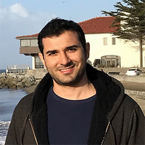

Mohammad Reza Keshtkaran
Tuesday, February 26, 2019
Large-scale automated deep neural network training framework for robust inference of neural population dynamics
Over the past decade, the ability to record from large populations of neurons has increased exponentially. These capabilities motivate powerful new tools to understand the computations underlying the activity of large neural population. We recently demonstrated a deep learning tool, Latent Factor Analysis via Dynamical Systems (LFADS), that uses sequential autoencoders (SAEs) to precisely estimate neural population dynamics underlying neural population (Pandarinath et al. 2017, BioRxiv), which in turn led to, for example, a dramatic increase in our ability to decode arm movements from brain activity. However, like many deep learning methods, SAEs require careful hand-tuning of complex model hyperparameters (HPs) to ensure optimal performance, which is challenging, time-consuming, and critically limits their application. Importantly, current SAEs are susceptible to overfitting if HPs are automatically searched, due to a lack of appropriate cross-validation strategy. In this talk I will present a novel network optimization scheme that we have developed to force the SAE to only model structure that is shared across neurons, which helps avoid overfitting. Secondly I will describe a large-scale, automated HP tuning framework based on Population Based Training (PBT; Jaderberg et al. 2017, arXiv), to train many tens of models simultaneously while using evolutionary algorithms to tune HPs and find optimal models. Finally I will present the results on decoding monkey’s arm kinematics from their brain activity modeled through our framework, and show that PBT-LFADS consistently matched or outperformed the performance of the original LFADS with hand-tuned HPs. Strikingly, the modified SAE with PBT was more robust to dataset size, and achieved better generalization to movement conditions the model had not been trained on. Our large-scale, automated training framework for SAEs will provide the neuroscience community with a robust and easy to use tool to estimate neural population dynamics.
Mohammad Reza Keshtkaran is currently a postdoctoral fellow in the Coulter Department of Biomedical Engineering at Emory and Georgia Tech where he primarily uses deep learning to model the dynamical structure underlying the activity of large population of neurons. He received a B.S. from Shiraz University, Iran in 2009 and a Ph.D. in Electrical and Computer Engineering from the National University of Singapore in 2014. His research has been focused on signal processing, machine learning, and large-scale training and hyperparameter optimization of deep neural networks for modeling the activity of large number neurons in the brain.